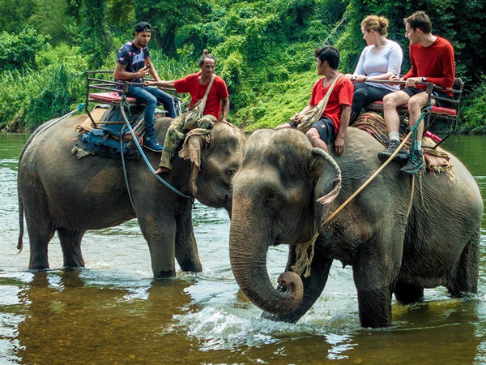
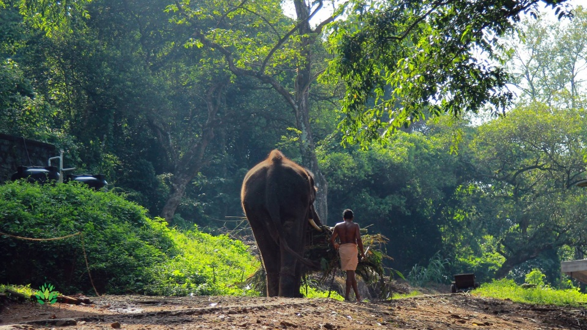
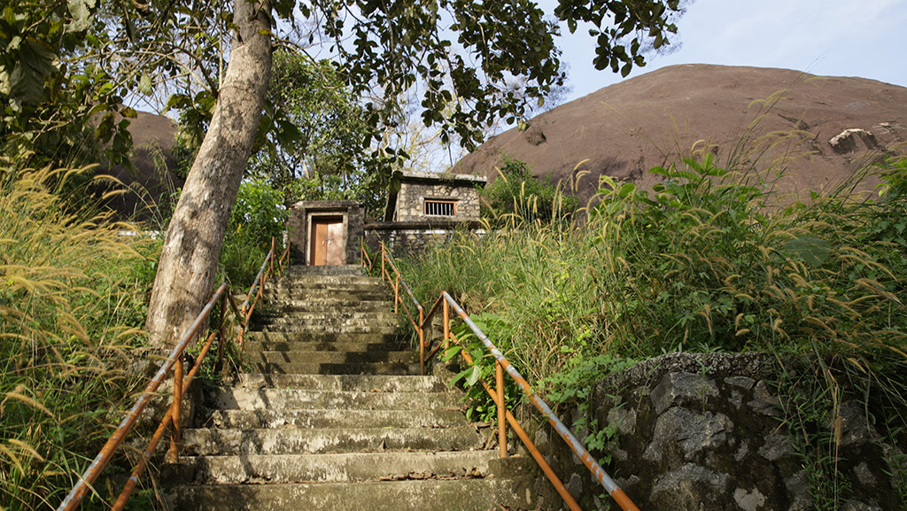
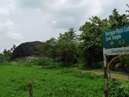
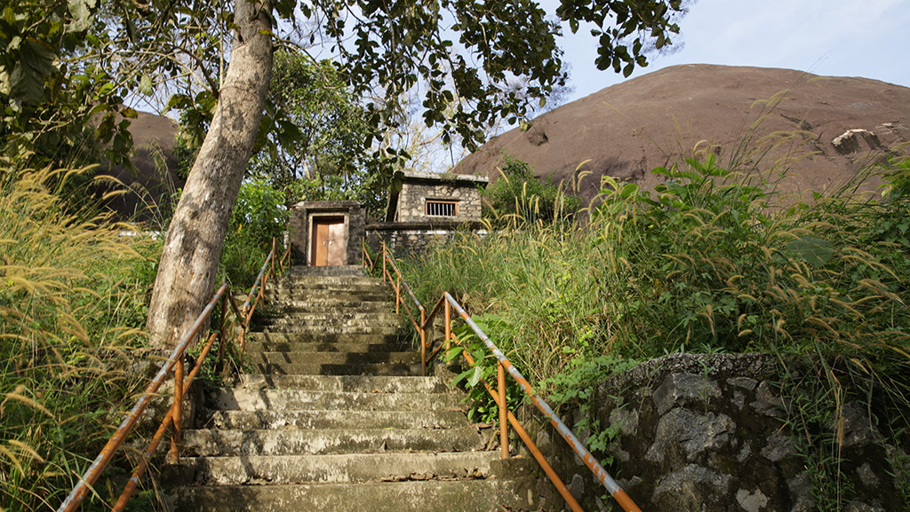
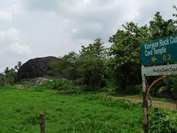
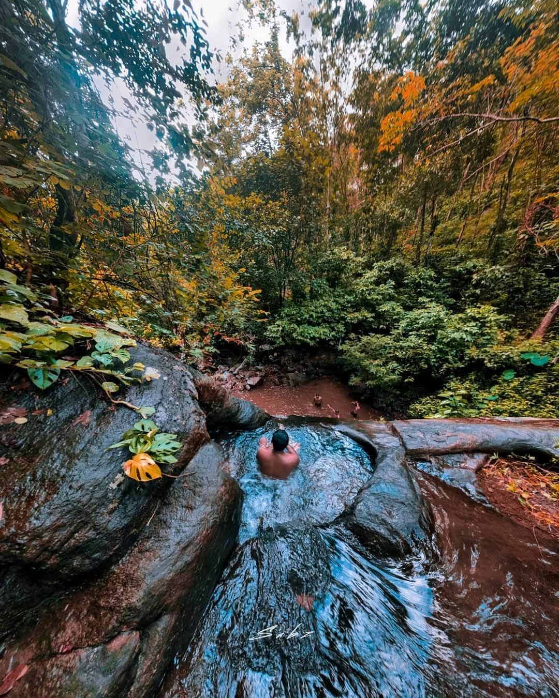
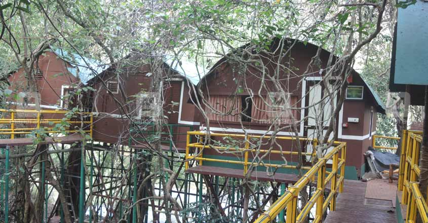
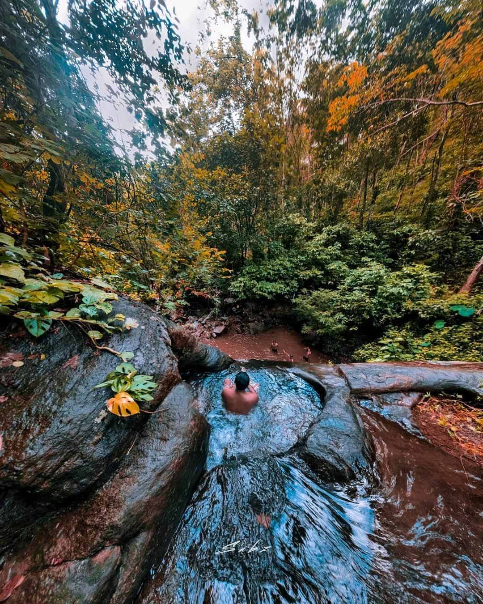
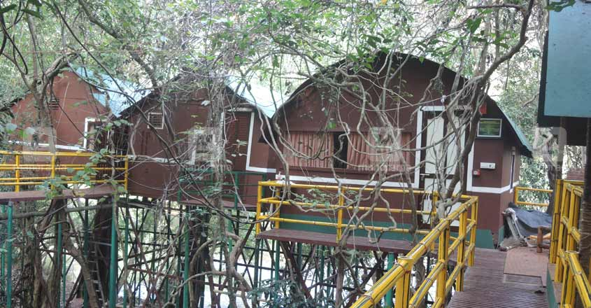

With a plethora of religious places, Pathanamthitta (view video) is fondly referred to as
the Holy Land. The place is also noted for its folklore and art forms, the most famous
among them being Padayani (view video), a traditional and ritual art form performed in
Bhagavathi temples. Pathanamthitta is also where the greatest annual pilgrimage occurs,
when over 1 million devotees go to Sabarimala (view video), a temple situated at a hilltop.
Home to many temples, heritage villages and cultural training centres, Pathanamthitta
is also renowned for the annual ‘Vallasadya’ (view video), which is held at the Aranmula
Sree Parthasarathy Temple. This grand festive occasion continues to attract travellers
from far and wide. The place is also the hub of Kathakali, classical art forms and Kalaripayattu, and is known for its fairs and festivals.
Konni ElephantCamp
It is a place where one can play with the adorable giants of the forest. Konni Elephant
Training Centre, situated 11 km from Pathanamthitta is a prominent elephant training
camp in Kerala that attracts a large number of tourists throughout the year. Visitors can
feed, ride and interact with the elephants here.
Lost, abandoned or hurt baby elephants are rescued from forests and brought to the
training centre. Here they are housed in wooden cages called aanakoodu, nursed back to
health, and trained by experienced mahouts. The existing aanakoodu was built in 1942
from a wood named kambakam.



 



 


